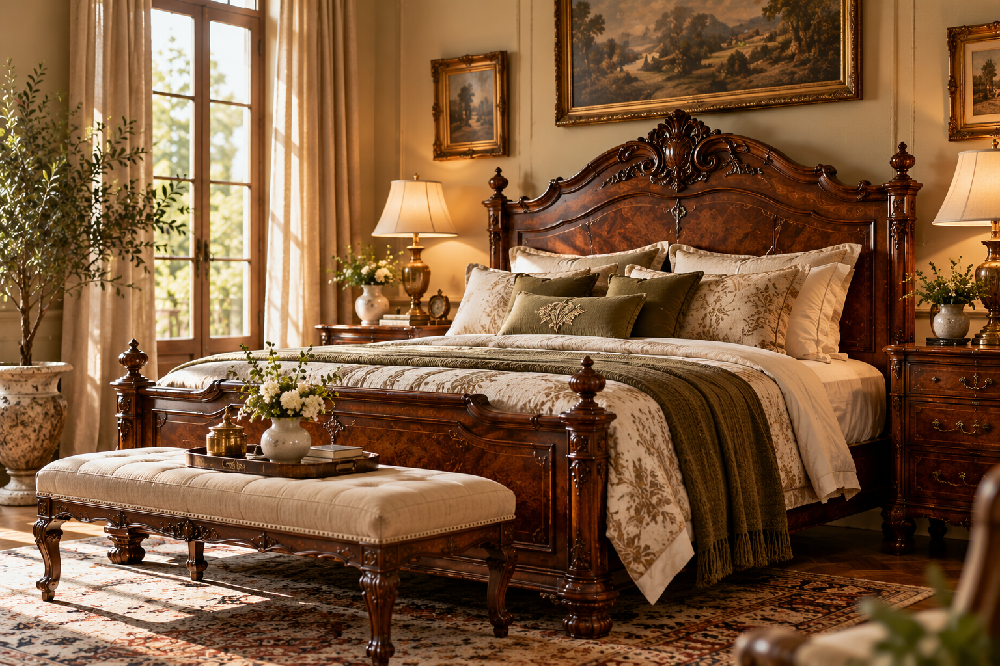

The Collector's JournalThe Art of Choosing Furniture That Lasts for Generations
What makes an antique truly special? Explore the craftsmanship, materials, proportions, and distinctive details that help collectors recognise furniture with lasting character.